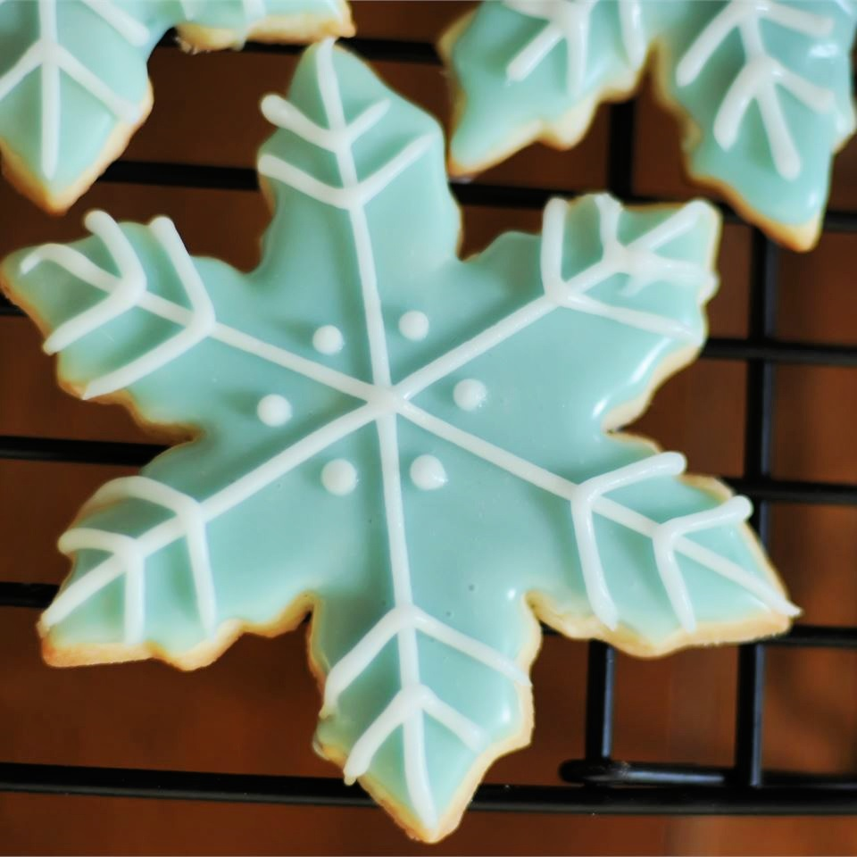

Sugar Cookies

Description
Beautiful and delicious snowflake-shaped christmas cookies,
baked in only 8 minutes. The only ingredients you need are
very common one you probably already have in your kitchen!
The quantities are for 60 cookies
Ingredients
- 1.5 cups of softened butter
- 2 cups of white sugar
- 4 eggs
- 1 teaspoon vanilla extract
- 5 cups all-purpose flour
- 2 teaspoons baking powder
Steps
- In a large bowl, cream together butter and sugar until smooth.
Beat in eggs and vanilla. Stir in the flour, baking powder, and salt.
Cover, and chill dough for at least one hour (or overnight).
- Preheat oven to 400 degrees F (200 degrees C).
Roll out dough on floured surface 1/4 to 1/2 inch thick.
Cut into shapes with any cookie cutter.
Place cookies 1 inch apart on ungreased cookie sheets.
- Bake 6 to 8 minutes in preheated oven. Cool completely.
Homepage